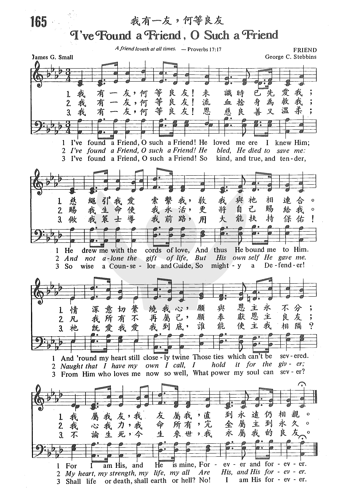

1010
I Found a Friend O Such A Friend _James
G. Small
我有一友，何等良友
|
|
|
|
165 I Found a Friend O Such A Friend
Lyrics:
1. I’ve found a Friend, oh, such a Friend! He loved me ere I knew Him;
He drew me with the chord of love, And thus He bound me to Him. And ‘round
my heart still closely twine Those ties which naught can sever,
For I am His, and He is mine, Forever and forever.
2. I’ve found a Friend, oh, such a Friend! He bled; He died to save me;
And not alone the gift of life, But His own self He gave me.
Naught that I have my own I call, I hold it for the Giver,
My heart my strength, My life my all, Are His and His forever.
3. I’ve found a Friend, oh, such a Friend! So kind and true and tender,
So wise a counselor and Guide, So mighty a defender!
From Him, who loves me now so well, What power my soul can sever?
Shall life or death, or earth or hell? Now I am His forever. |
“165 我有一友 何等良友 I’VE FOUND A FRIEND, O SUCH A FRIEND.mp3” by
DOW YOUNG. Track 11.
我有一友，何等良友!
未識時已先愛我;
慈繩引我愛索繫我，
教我與祂相連合。
情深意切縈繞我心，願與恩主永不分;
我屬我友，我友屬我，
直到永遠仍相親。
我有一友，何等良友!
流血捨身為救我;
賜我生命使我永活，
更將自己賜給我。
凡我所有不再屬己，願奉獻恩主良友;
我心我力，我命所有，
完全屬主到永久。
我有一友，何等良友!
恩慈良善又溫柔;
做我策士導我前路，用大能扶持保佑!
祂既愛我愛我到底，誰能使主我相隔?
不論生死，今生來世，
我永屬我的良友。
|
|
https://www.zanmeishige.com/tab/25522.html?songbook=1&index=165
 |
|
|
|
 教會聖詩 165 我有一友，何等良友 I’ve Found a Friend, O Such a Friend
教會聖詩 165 我有一友，何等良友 I’ve Found a Friend, O Such a Friend
-
1010
I Found a Friend O Such A Friend 我有一友，何等良友
|
Short Name: |
James G. Small |
|
Full Name: |
Small, James G., 1817-1888 |
|
Birth Year: |
1817 |
|
Death Year: |
1888 |
Small, James
Grindly, son of George Small, J.P. of Edinburgh, was born in that
city in 1817. He was educated at the High School, and the University of
Edinburgh. He studied divinity under Dr. Chalmers, and in 1843 he joined the
Free Church of Scotland. In 1847 he became the minister of the Free Church
at Bervie, near Montrose. He died at Renfrew, Feb. 11, 1888. His poetical
works were (1l) The Highlands and other Poems, 1843,
3rd ed. 1852; (2) Songs of the Vineyard in Days of Gloom
and Sadness, 1846 ; (3) Hymns for Youthful Voices,
1859; (4) Psalms and Sacred Songs, 1866. His
well-known hymn "I've found a Friend; oh such a Friend" (Jesus, the
Friend), appeared in his Psalms & Sacred Songs,
1866. It is found in I. D. Sankey's Sacred Songs and Solos,
1878, and others.
--John Julian, Dictionary
of Hymnology, Appendix, Part II (1907)
Tune Information
|
Title: |
FRIEND (Stebbins) |
|
Composer: |
George C. Stebbins (1878) |
|
Meter: |
8.7.8.7 D |
|
Incipit: |
55333 43221 76565 |
|
Key: |
A♭
Major |
|
Copyright: |
Public Domain |

"I’VE FOUND A FRIEND"
"Greater
love hath no man than this, that a man lay down his life for his friends"
(Jn. 15.13)
INTRO.:
A song which refers to the love that Jesus had for us as our Friend to lay down
His life for us is "I’ve Found A Friend" (#403 in Hymns
for Worship Revised, #203 in Sacred
Selections for the Church). The text was written by James Grindlay
Small, who was born at Edinburgh, Scotland, in 1817, the son of George Small,
and attended Edinburgh High School. Converted in 1834, he published two volumes
of poetry, The
Highlands and Other Poems in 1843, and Songs
of the Vineyard in Days of Gloom and Sadness in 1846. Educated
at the University of Edinburgh, he studied under Dr. Chalmers and became a
minister of the Free Church of Scotland in 1847, serving at the Free Church of
Bervie, near Montrose.
Greatly interested in hymnology, Small published Hymns
for Youthful Voices in 1859. His most famous hymn, "I’ve Found
a Friend," was first published in The Revival
Hymn Book, second series, in 1863. Originally entitled "Jesus, the Friend,"
it was later included in Small’s own Psalms
and Sacred Songs of 1866. In 1875, Arthur S. Sullivan provided
a melody (Constance–Sullivan) for it, but the tune (Friend) best known in this
country was composed in 1878 by George Coles Stebbins (1846-1945). In January of
that year, Stebbins, a well known gospel song composer of the late 1800’s and
early 1900’s, was assisting evangelist George F. Pentecost in a campaign being
held at the Music Hall in Providence, RI. His version of "I’ve Found A
Friend" was first published later that year in Gospel
Hymns No. 3, the first of that series in which Stebbins assisted Ira David
Sankey (1840-1908).
Stebbins also produced a couple of other melodies during this same engagement in
Providence. One was the tune for "Must I Go, And Empty Handed?", using words
penned the year before by Charles Carroll Luther (1847-1924). The other was his
tune (Evening Prayer) that has come to be used with the hymn "Savior, Breathe an
Evening Blessing," authored in 1820 by James Edmeston (1791-1867). Other
well known Stebbins melodies are used with "Jesus Is Tenderly Calling Thee Home"
and "Take Time to Be Holy." Small died at Renfrew-on-the-Clyde, Scotland, on
Feb. 11, 1888.
Among hymnbooks published by members of the Lord’s church during the twentieth
century for use in churches of Christ, "I’ve Found a Friend" appeared in the
1937 Great
Songs of the Church No. 2 edited by E. L. Jorgenson; the 1948 Christian
Hymns No. 2 edited by L. O. Sanderson; the 1963 Christian
Hymnal edited by J. Nelson Slater; and the 1963 Abiding
Hymns edited by Robert C. Welch. Today, it may be found in the
1992 Praise
for the Lord edited by John P. Wiegand; in addition to Hymns
for Worship and Sacred
Selections. For reasons that I cannot fully explain–perhaps the encouraging
nature of the words perfectly accented by Stebbins’s tune–this has always been
one of my favorite hymns since my teenage days, though my experience has been
that it is not very well known among brethren.
This hymn offers several reasons why we can consider Jesus as our Friend.
I. According to stanza 1, Jesus is our Friend because He loves us
"I’ve found a Friend, oh, such a Friend! He loved me ere I knew Him;
He drew me with the cords of love, And thus He bound me to Him.
And round my heart still closely twine Those ties which naught can sever,
For I am His and He is mine, Forever and forever."
A. The inspired apostle John affirms over and over the great love which Jesus
had for us: 1 Jn. 3.16
B. This love should draw and bind us to Him as with cords just as God’s love
was designed to lead Israel to God: Hos.11.4
C. Such ties will closely twine around our hearts and never be severed if we
determine to be faithful until death: Rev. 2.10
II. According to stanza 2, Jesus is our Friend because He died to save us
"I’ve found a Friend, oh, such a Friend! He bled and died to save me;
And not alone the gift of life, But His own self He gave me.
Naught that I have my own I call; I hold it for the Giver:
My heart, my strength, my life, my all Are His, and His forever."
A. Because of God’s love for us, Jesus died for us while we were still sinners:
Rom. 5.8
B. Those who have been saved by His love and death understand that nothing that
we have is our own but but all things come from the Lord: 1 Chron. 29.14
C. Therefore, we in return should love Him with all our heart, soul, mind, and
strength: Mk. 12.30
III. According to stanza 3, Jesus is our Friend because He is our Guard in this
life
"I’ve found a Friend, oh, such a Friend! All power to Him is given,
To guard me on my onward course, And bring me safe to heaven.
Th’eternal glories stream afar To nerve my faint endeavor:
So now to watch, to work, to war, And then to rest forever."
A. As the One who died to save us, Jesus has all power to protect us
spiritually: Matt. 28.18-20
B. His aim is that we might continue on our onward course and press on to gain
the prize: Phil. 3.13-14
C. To help motivate us, He sets the eternal glories before us that we might
watch, work, and war, as we run the race: Heb. 12.1-2
IV. According to stanza 4, Jesus is our Friend because He is our Guide to
eternal life
"I’ve found a Friend, oh, such a Friend! So kind, and true, and tender,
So wise a Counsellor and Guide, So mighty a Defender!
From Him who loves me now so well, What power my soul can sever?
Shall life or death, shall earth or hell? No! I am His forever."
A. Jesus is certainly kind and true and tender because it is by His divine
kindness and mercy that we can be saved: Tit. 3.4-5
B. Also, He is a wise Counsellor and Guide, and a mighty Defender to aid us in
our temptations: Heb. 2.17-18
C. This great Friend will protect us so that if we follow Him, nothing can
separate us from His love: Rom. 8.35-39
CONCL.:
It
is good and pleasant to have friends in this life. However, sometimes my
earthly friends can forsake me. Even the best of friends can let me down on
occasion, just as I may not always be the kind of friend to others that I should
be. Yet, Jesus Christ will never forsake me nor let me down. Therefore, I should
be ever thankful to God that in Jesus Christ "I’ve Found A Friend."
https://hymnstudiesblog.wordpress.com/2008/07/23/quoti039ve-found-a-friendquot/